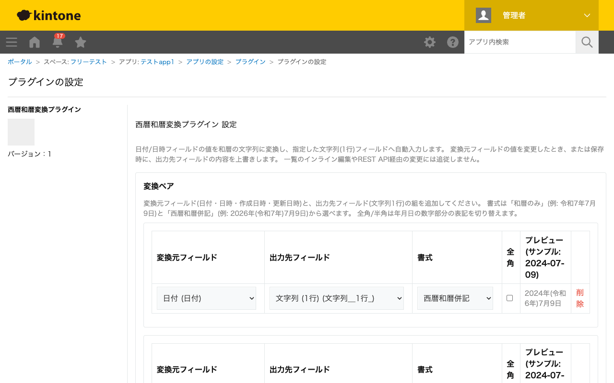

GovAppsプラグイン 安全性を確認できる無料kintoneプラグイン集
日付・日時フィールド(DATE / DATETIME / 作成日時 / 更新日時)の値を和暦の文字列に変換し、 指定した文字列(1行)フィールドへ自動入力します。「和暦のみ」「西暦和暦併記」の書式が選べ、 月日・元号年の全角/半角も切り替え可能です。令和より先の改元にも、設定画面から元号名と 改元日を登録することで対応できます。
申請日や決裁日を「令和7年7月9日」のような和暦表記で帳票に印字したい場合、DATEフィールドの値から自動的に和暦の文字列フィールドを作成できます。印刷プラグインやカスタマイズビューへの差し込み元として使えます。
「西暦和暦併記」プリセットを選ぶと「2026年(令和8年)7月10日」のように西暦と和暦を1つのフィールドにまとめて出力できます。社内向けと対外向けで表記を使い分けたい場合は、同じ日付フィールドから複数の出力先フィールドへ、異なる書式のペアを設定できます。
全角オプションをONにすると、月日・元号年のうち1桁の数字だけを全角にします(例: 令和８年７月10日)。2桁になる数字は半角のまま残るため、縦書き帳票や罫線の幅を揃えたい場面での見た目の統一に使えます。
DATE型だけでなく、作成日時・更新日時(CREATED_TIME / UPDATED_TIME)フィールドも変換元に選べます。タイムゾーンはAsia/Tokyo固定で暦日を計算するため、日本国内での利用を想定した挙動になります。
保存後は、変換元フィールドの値を変更したとき、または保存時に、出力先フィールドの内容が自動的に上書きされます。一覧のインライン編集やREST API経由での変更には追従しません。
kintoneセキュアコーディングガイドラインに沿って実装時にチェックしています。特に重要な点は次のとおりです。
textContentまたはcreateElement+プロパティ代入で行っており、innerHTMLへの外部由来文字列の差し込みはありません。kintone.app.getFormFields()等のJavaScript APIのみで完結します。kintone以外の外部サーバーへの通信も行いません。Intl.DateTimeFormatのみで行い、外部ライブラリを使用していません。kintone.plugin.app.getConfig()がnullを返す未設定状態でも例外を投げず、既定値で安全に動作します。詳細な確認項目・確認日は下記GitHubのチェックリストに全項目を掲載しています。

このプラグインはREST APIを一切実行しません。フィールド情報の取得はkintone.app.getFormFields()のみで行い、
レコード画面での変換処理はchange/submitイベント内でのローカルな文字列変換のみで完結します。
API実行数制限に影響することはありません。